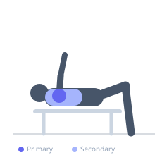
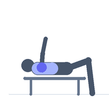

Exercise guide / Reverse Pec Deck
Reverse Pec Deck
The reverse pec deck uses the pec deck or butterfly machine in reverse — facing the pad rather than away from it — to perform a rear deltoid fly motion. The machine provides a guided movement path and consistent resistance throughout the arc, making it an effective and low-skill option for targeting the posterior deltoid and scapular retractors. It is widely used in hypertrophy programs as a finishing or high-rep accessory exercise for rear deltoid development.
Primary muscles
deltoid posterior
Secondary muscles
rhomboid major
trapezius middle
Stabilizers
infraspinatus
teres minor
Equipment
Pec Deck / Fly Machine


Starting position
- Face the pec deck machine (reverse of the normal setup). Grip the handles with arms in front of the body at shoulder height. Adjust the seat so the handles are at shoulder height.
Setup
- Some pec deck machines have specific attachments or handle adjustments for reverse use. Position the seat so the arms are parallel to the floor at the start.
Steps
- Step 1: Face the machine, grip the handles with arms extended forward.
- Step 2: Begin from the arms-forward position (handles together or close).
- Step 3: Pull the handles outward and backward in a horizontal arc.
- Step 4: Bring the arms to fully in line with the shoulders (T-position).
- Step 5: Squeeze the rear delts and return under control.
Coaching cues
- Think rear delt squeeze, not elbow drive
- Slow and controlled on the return
- Shoulder blades stay back
Breathing
- Exhale on the opening (fly) motion, inhale on the return.
Range of motion
- Arms start forward (closed position) and open to T (arms in line with shoulders).
Tempo
- 2-1-3-0
Common mistakes
- Letting the shoulder blades slide forward on the return — maintain upper back position
- Using too heavy a load, causing the traps to dominate instead of the rear delts
Safety
- Keep the neck neutral — do not crane forward toward the machine
Training
- hypertrophy: 12–20 reps
- hypertrophy: 3–4 sets
- Rest: {'hypertrophy': 60}